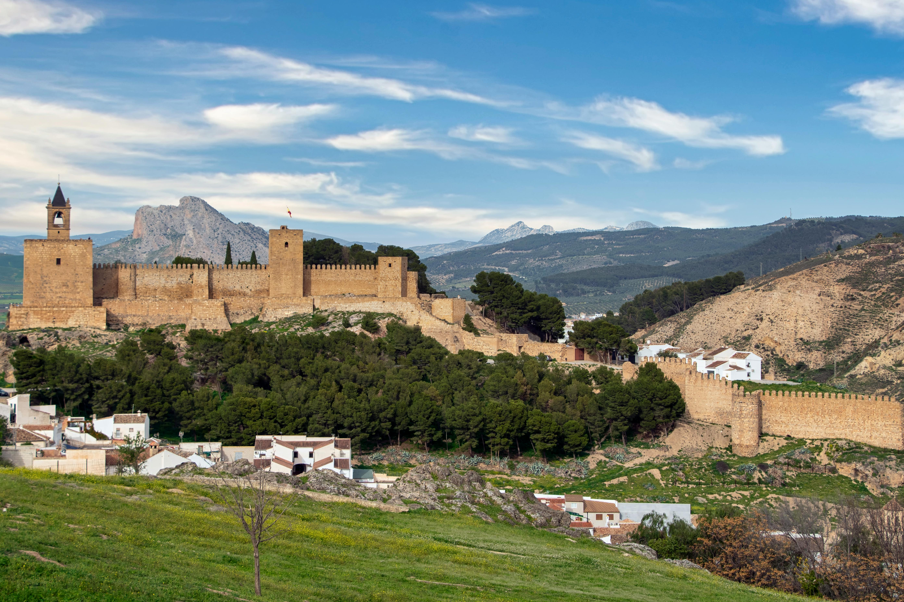

Bali
Una isla tropical en Indonesia famosa por sus templos hindúes, arrozales en terrazas, playas paradisíacas y cultura espiritual. Es ideal para quienes buscan un equilibrio entre naturaleza, surf, relajación y vida local vibrante

Barcelona
Ciudad costera en España que combina arquitectura modernista (como la Sagrada Familia), playas urbanas, vida nocturna, y una rica escena gastronómica. Perfecta para quienes buscan cultura, arte y entretenimiento.

Machu Picchu
Una antigua ciudad inca enclavada en los Andes peruanos. Su valor arqueológico y sus paisajes montañosos la convierten en una experiencia única, mística y cargada de historia.

New York
Una de las metrópolis más icónicas del mundo. Ofrece una mezcla imparable de cultura, rascacielos, espectáculos, museos y diversidad. Ideal para quienes buscan energía urbana y experiencias cosmopolitas.

Santorini
Isla griega de casas blancas con cúpulas azules, famosa por sus puestas de sol, acantilados y playas volcánicas. Es un destino romántico y visualmente impresionante.

Tokyo
Capital futurista de Japón donde conviven la tecnología avanzada, la cultura pop, los templos tradicionales y la exquisita gastronomía japonesa. Un viaje vibrante y lleno de contrastes.
Experiencias

Se trata de explorar lo desconocido, asumir riesgos y sentir adrenalina. Incluye actividades como senderismo, paracaidismo, surf o explorar selvas y montañas. Ideal para espíritus inquietos.

Implica sumergirse en la historia, el arte, la arquitectura y las costumbres locales de un destino. Visitar museos, ruinas, templos y convivir con la gente local son claves de esta experiencia.

Un enfoque de descanso, desconexión y bienestar. Incluye playas tranquilas, spas, naturaleza serena y alojamientos confortables. Perfecto para recargar energía y reducir el estrés.


“Caminar solo por las dunas fue una experiencia casi espiritual. El silencio del desierto, el calor del sol y la inmensidad del paisaje te hacen sentir pequeño y poderoso a la vez. Una aventura que recomiendo a todo el que quiera perderse para encontrarse.”
“Descubrir un pequeño pueblo costero con aguas cristalinas y muchos barquitos de diferentes estilos fue como entrar en una postal. Todo era calma y autenticidad. Cada paseo por el puerto era una dosis de felicidad.”
“Navegar en una canoa por ese lago rodeado de árboles fue lo más pacífico que he vivido. Sin ruido, solo naturaleza y el sonido del remo en el agua. Ideal para desconectar del mundo y conectar contigo mismo.”
“Saltar en paracaídas sobre el océano fue adrenalina pura. Ver el mar azul infinito desde el cielo me hizo sentir libre como nunca antes. Una experiencia que no se olvida jamás.”
Contacto
Información de contacto
Email: info@travelxplore.com
Teléfono: +34 123 456 789
Dirección: Calle Falsa 123, Madrid, España